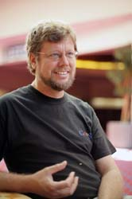

Guido van Rossum - Personal Home Page

Who I Am
{kind=link}
I am the creator and emeritus BDFL of the Python programming language. See also my resume and my publications list, a brief bio, assorted writings, presentations and interviews (all about Python), and some pictures of me.
I am currently a Distinguished Engineer at Microsoft. I have worked for Dropbox, Google, Elemental Security, Zope Corporation, BeOpen.com, CNRI, CWI, and SARA. (See my resume.) I created Python while at CWI.
Social Media and Blogs
Read my "King's Day Speech" for some inspiration. Then watch the Python Documentary.
I am @gvanrossum on X (formerly Twitter), Instagram, and GitHub.
Blog posts:
- Interviews with key Python developers from the first 25 years, 2026– (new series!)
- Medium articles, 2019–2021 (from Medium)
- History of Python, 2009–2018 (from Blogger)
- Neopythonic, 2008–2022 (from Blogger)
- Artima blog, 2003–2008 (from Artima.com)
How to Reach Me
You can send email for me to guido (at) python.org. I read everything sent there, but I receive too much email to respond to everything.
Please understand that I do not give talks or keynotes any more, nor do I participate in podcasts or give interviews, etc. I am sorry, but I just receive too many such requests to decline them individually. Offering payment or trips to exotic locales just makes things worse, sorry.
I also prefer not to receive:
- questions about how to use Python (please read the documentation or search the internet for Python answers forums),
- bug reports (use the GitHub issue tracker),
- proposals for changes to the language (use Discourse),
- job offers (I'm happy where I am),
- or requests to join you in some far-fetched scheme to save humanity (though sometimes I like me a good rant :-).
My Name
My name often poses difficulties for Americans.
Pronunciation: in Dutch, the "G" in Guido is a hard G, pronounced roughly like the "ch" in Scottish "loch". (Listen to the sound clip.) However, if you're American, you may also pronounce it as the Italian "Guido". I'm not too worried about the associations with mob assassins that some people have. :-)
Spelling: my last name is two words, and I'd like to keep it that way, the spelling on some of my credit cards notwithstanding. Dutch spelling rules dictate that when used in combination with my first name, "van" is not capitalized: "Guido van Rossum". But when my last name is used alone to refer to me, it is capitalized, for example: "As usual, Van Rossum was right."
Alphabetization: in America, I show up in the alphabet under "V". But in Europe, I show up under "R". And some of my friends put me under "G" in their address book...
More Hyperlinks
- Here's a collection of essays relating to Python
that I've written, including the foreword I wrote for Mark Lutz's book
"Programming Python".
- I own the official
Python license.
{kind=link}
The Audio File Formats FAQ
I was the original creator and maintainer of the Audio File Formats FAQ. It was later maintained by Chris Bagwell, but seems to have been lost. You can still find it on archive.org by searching for http://www.cnpbagwell.com/audio-faq. And here is a link to SOX, to which I contributed some early code.
"On the Internet, nobody knows you're a dog."
{kind=link}